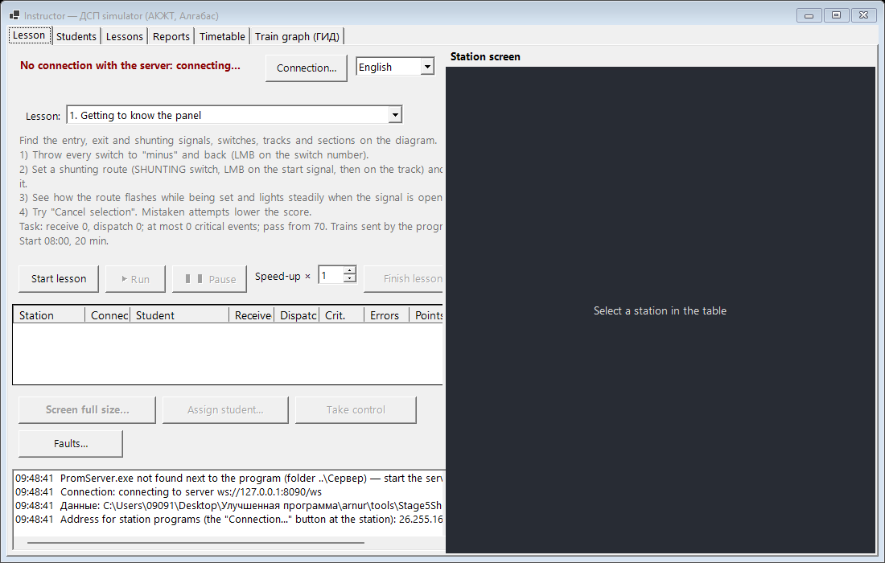
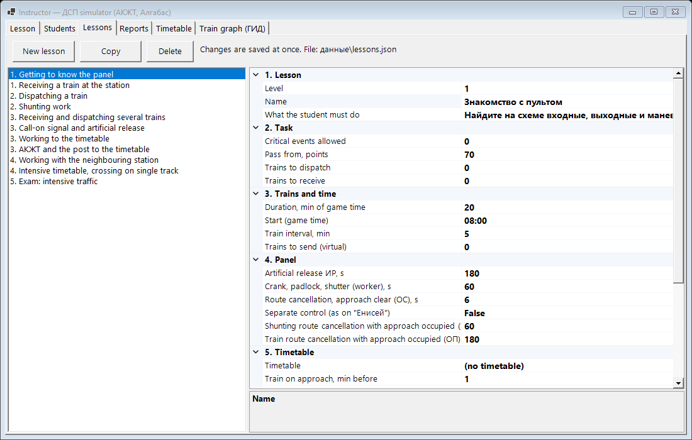
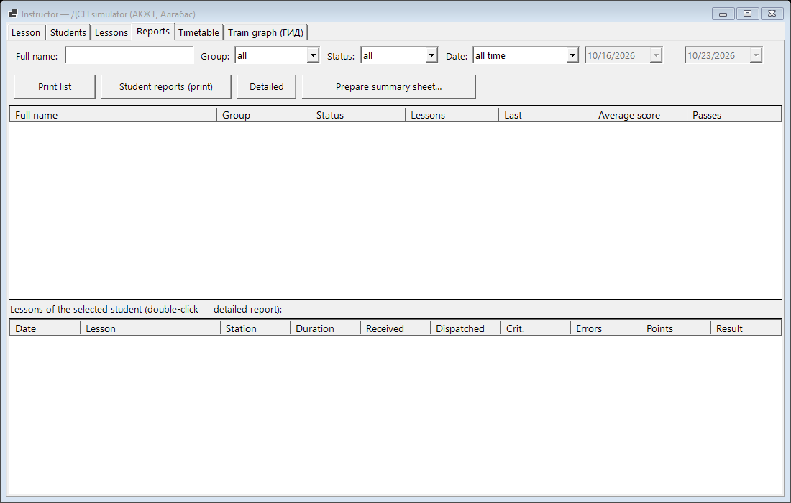

Teacher guide
How to prepare the classroom, run a training game, set faults and review the results.
1. What is included
| Folder | What it is |
|---|---|
Преподаватель\Teacher.exe | The teacher program. Starts the connection server itself. Data (students, lessons, results) is kept in Преподаватель\данные. |
АКЖТ\Station.exe | Panel of АКЖТ station and the junction post (one window for two monitors). Arduino folder — layout firmware. |
Алгабас\Algabas.exe | Panel of Алгабас station. датчики.txt — which layout sensor belongs to which section. Arduino folder — the sketch. |
Сервер\PromServer.exe | Connection server (port 8090). No need to start it by hand. |
Инструкции | These guides (student, teacher, programmer) in three languages. |
No installation is needed: everything is inside the exe files. The whole готовая_программа folder can be carried on a USB stick. Windows 10 / 11, computers on one network.
2. Preparing the classroom
- On the teacher computer start
Преподаватель\Teacher.exe. Windows asks about the firewall for PromServer — allow it on private networks. The log at the bottom shows the address for the stations (e.g.192.168.8.27). - On the student computers start АКЖТ or Алгабас → Connection… → the teacher address → Connect. The address is remembered.
- The station appears in the table on the «Lesson» tab. АКЖТ and Алгабас are connected to each other — trains pass between the stations by themselves.
- With the layout — choose the Arduino port in the list at the top of the station window (see section 11).

3. Students
«Students» tab: Add… (full name, group, password — may be empty), Edit…, Password…, Delete. A student logs in at the station with «Log in» and chooses himself. If registration is allowed, a student can add himself («I am not on the list…»).
4. Lessons
«Lessons» tab: lessons on the left, properties on the right. New lesson, Copy, Delete. Changes are saved at once.

| Section | Properties |
|---|---|
| 1. Lesson | Name, level (1 — beginners … 5 — exam), what the student should do (shown to the student by the «Task» button). |
| 2. Task | Trains to receive / dispatch, allowed critical events, pass from … points. |
| 3. Trains and time | How many virtual trains to send and how often, duration (game minutes), start (game time). |
| 4. Panel | Route cancellation delays (ОС, ОП, ОМ), artificial release, worker time; separate control. |
| 5. Timetable | The lesson timetable («Timetable» tab), how early a train appears on the approach, train speed (s per section; 12 for timetables). |
| 6. Shunting and sidings | Plan: wagons to place on / remove from the siding, local wagons to dispatch; local wagons per freight train; loading minutes per wagon; recovery train arrival and works. |
Ready lessons go from «Getting to know the panel» to the «Exam»; there are timetable lessons, «Logs, forms, radio», «Shunting work and private siding», «Derailment and recovery train».
5. Running a lesson
- «Lesson» tab: choose a lesson → Start lesson. Stations receive the lesson, panels are reset, counters are zeroed.
- Students log in. To seat a student at a station by hand — Assign student….
- ▶ Run — game time runs; ❚❚ Pause — stopped (panels accept no commands); «Speed ×1…×10» — for all stations.
- The station table shows the student, received / dispatched, critical events, mistakes, points — updated live.
- Finish lesson — stations send their results, saved on the «Reports» tab.
6. Student screen and control
- Click a station in the table — its screen appears on the right.
- Large: double-click the station or Screen full size… — a separate full-screen window, F11 — without a frame. For АКЖТ the «АКЖТ» / «Junction post» buttons show one diagram on the whole screen, «Whole window» — everything.
- Take control — your mouse and keyboard operate the student's panel, the student's panel does not respond. «Return control to the student» — back.
7. Faults (express inputs)
During the lesson: choose the station → Faults… → «Express input…»: object (signal, switch, section, line, train) → fault type → condition (none / state / change to state / change from state; for trains — any, by number, train, shunting, passenger, freight) → start (at once or from a game time) → «Accept». The list shows the state: waiting, active, being fixed by ШН, fixed. «Remove fault» — fix it yourself.
| Fault | What it trains |
|---|---|
| Signal does not clear / dropped | Call-on signal, radio «Instruction», form ДУ-54 at the exit signal; ДУ-46 entry, calling ШН. |
| Switch: no detection, does not move, gap, trailed | Crank, lock and clamp, disconnection keeping the signals, mock-up; ДУ-46. |
| False occupancy / false clear of a section or line | Auxiliary throw (ВК), artificial release, auxiliary direction change, telephone communication (ДУ-47, ДУ-50). |
| Direction does not change | ВСН, switching to telephone communication. |
| Train: engine, brakes, out-of-gauge, derailment | Radio («Repair»), informing the dispatcher, recovery train, warning. |
The student does not see a «fault» label — only what an operator would see. Train faults are reported by the driver.
8. Timetable and train graph
- «Timetable» tab: training timetables (three ready ones). A row is a train: number (even trains run АКЖТ → post → Алгабас), category, origin, times at each point, track. Errors and the planned graph are at the bottom.
- Timetable lesson: «Lessons» → «5. Timetable». Trains appear by themselves; the student has a «Timetable» button.
- «Train graph» tab: train paths of the current lesson are drawn live, the planned graph is dashed. Wheel — zoom, drag — scroll. Technical and sectional speed at the bottom.
9. Reports and summary sheet

- Filters: name, group, status, dates. Choose a student — his lessons are listed below; double-click a lesson or Detailed — the detailed report (opens in the browser, print with Ctrl+P).
- The detailed report contains: result and grade, critical events and mistakes, faults, log ДУ-46, logs ДУ-2 / ДУ-47 / ДУ-58 / ДУ-60, forms, warnings, radio, automatic log check (what matched the facts and what did not — you decide), shunting work and the siding log, the recovery train, the train graph, the action log.
- Student reports (print), Print list, Prepare summary sheet… (instructor, printing, Excel file).
10. How students are assessed
100 points minus penalties. Pass — points not below the lesson threshold and critical events not above the allowed number. The full penalty table is in the student guide. In short:
- Critical (−20): train waits at a closed entry signal more than 3 min, trailed switch, timetable delay over 5 min, unsecured wagons, second locomotive on the siding.
- Fault not recorded in ДУ-46 or ШН / ДНЦ / ПД not informed — −5 each. Unfulfilled task — −10 per train. Logs do not match the facts — −2 (up to −10 per log).
11. Layout (Arduino)
- The programs work with or without the layout. At the top of the station window there is a port list: choose the Arduino port. The «Sensors» line shows what the board sends.
- АКЖТ: firmware
АКЖТ\Arduino\StationMain_AKZHT, instructions —АКЖТ\Arduino\ИНСТРУКЦИЯ.txt. - Алгабас: sketch
Алгабас\Arduino\StationMain(22.10.2026: switches on shield sockets 0–4). Which sensor belongs to which section —Алгабас\датчики.txt(can be changed without rebuilding). - The station sees a real train on the layout as occupied sections. The student gives it a number (right-click the section → «Layout train number…»).
12. Languages
The «Русский / Қазақша / English» list is next to «Connection…». Your language is sent to all stations; a student can switch his own. Reports and the summary sheet are printed in your language. Station and signal names and what you type (names, lesson titles) are not translated.
13. Troubleshooting
- A station does not appear in the table.
- Check the address in «Connection…» at the station, the Windows firewall on the teacher computer (PromServer, private network) and that the computers are on one network.
- The server does not start.
- Another server is already running on this computer (a second Teacher.exe or PromServer.exe): close it.
- A student cannot log in.
- Add him on the «Students» tab or reset the password («Password…»).
- A result did not arrive.
- The station was offline when you finished the lesson. Do not close the station programs until «result received» appears in the table.
- The layout does not respond.
- Choose the right port; for АКЖТ see
ИНСТРУКЦИЯ.txtin the Arduino folder.